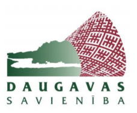

|
Radošo darbu konkurss “Mana Daugava” 7.-12. klašu skolēniem, kam interesē Daugava
un Latvija, tajā esošās vides, ekoloģiskās, dabas un kultūras vērtību saglabāšanas problēmas
un to iespējamie risinājumi.
Skolēniem, izmantojot foto vai video projektus, būs jāiekļaujas
konkursa tematikā „Mana Daugava”, atklājot un parādot kādu sev, novadam vai visai valstij
nozīmīgu stāstu vai problēmjautājumu sakarā ar vides kvalitātes, ekoloģisku, dabas vai kultūras
vērtību saglabāšanu saistītu faktoru Daugavas kontekstā.
Konkursa dalībniekiem līdz
2020.gada 23.novembrim jāiesūta darbi elektroniski uz e-pasta adresi daugavas.konkurss@inbox.lv.
Labākie radošie projekti tiks apbalvoti ar vērtīgām balvām.

|
|